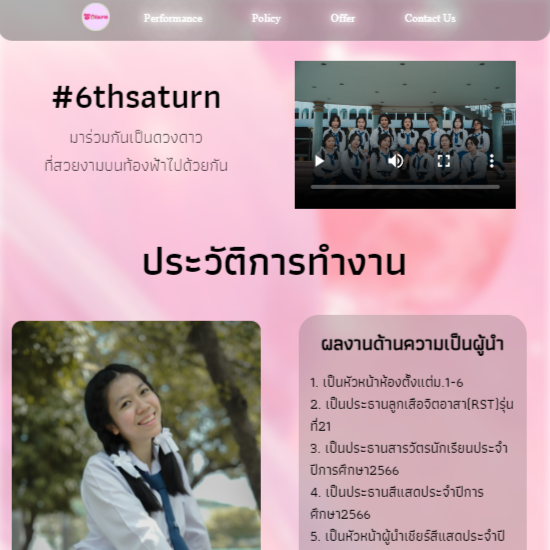
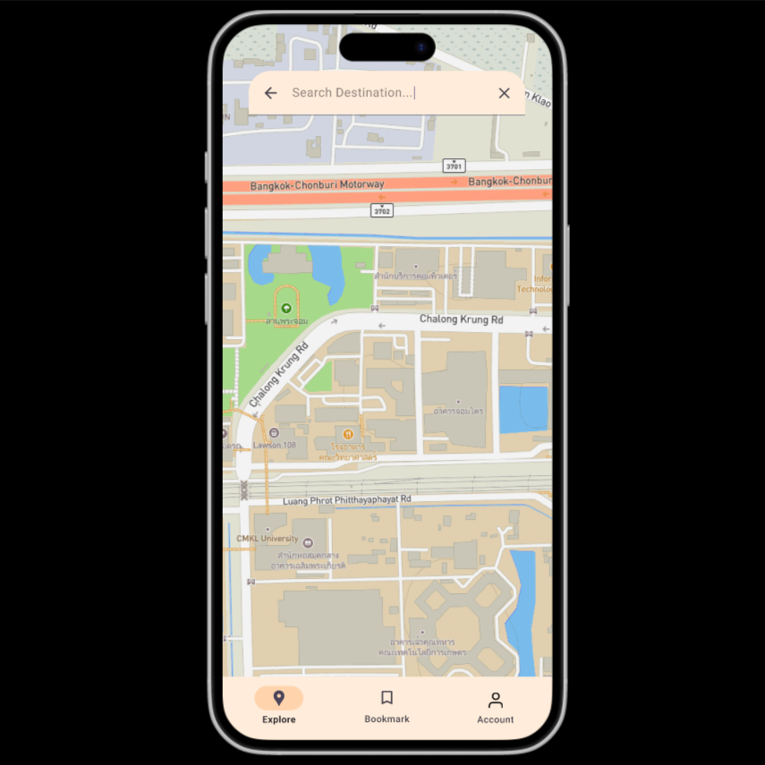
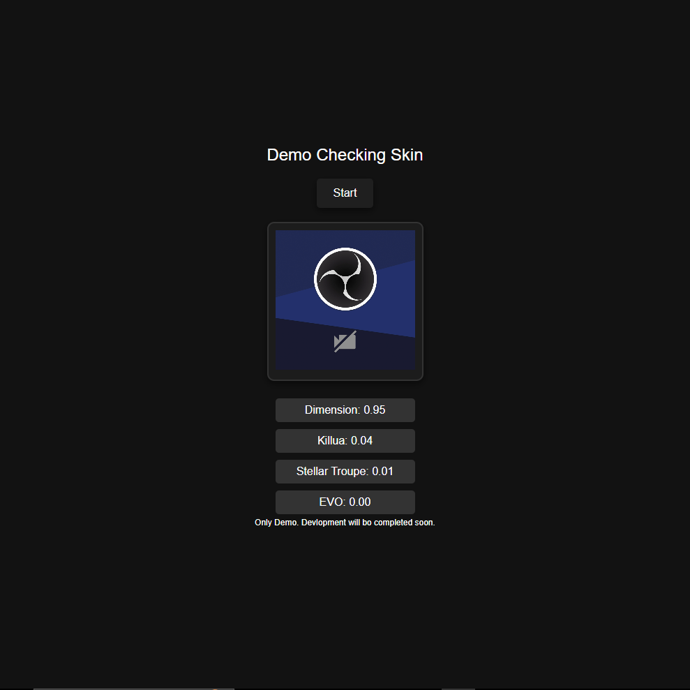
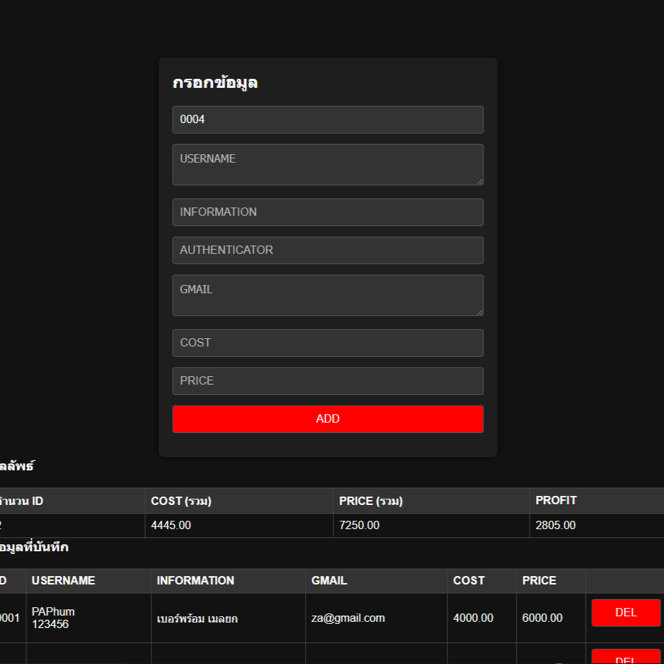
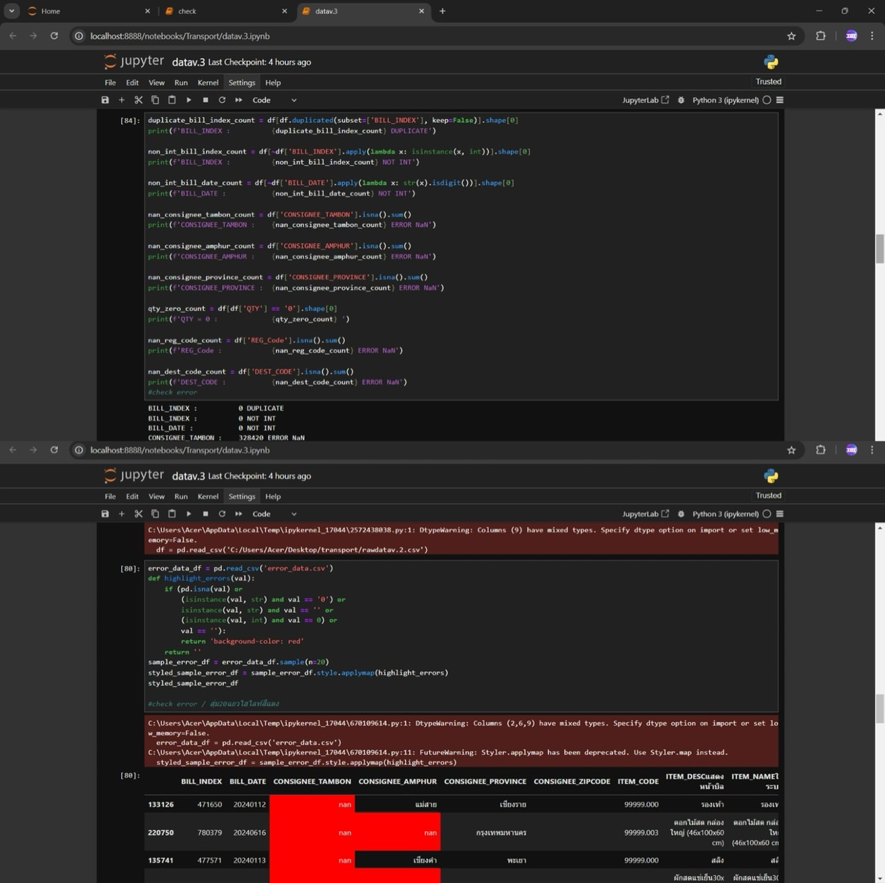
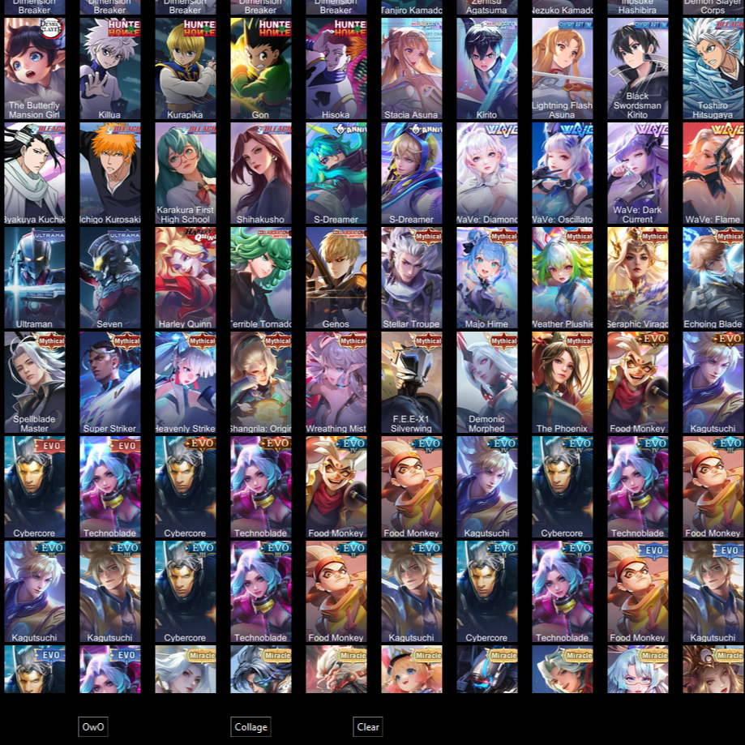
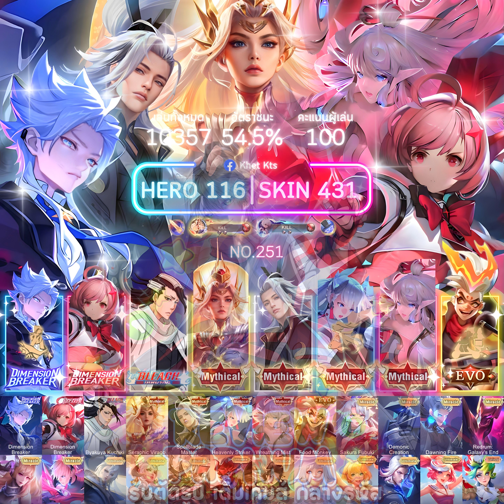
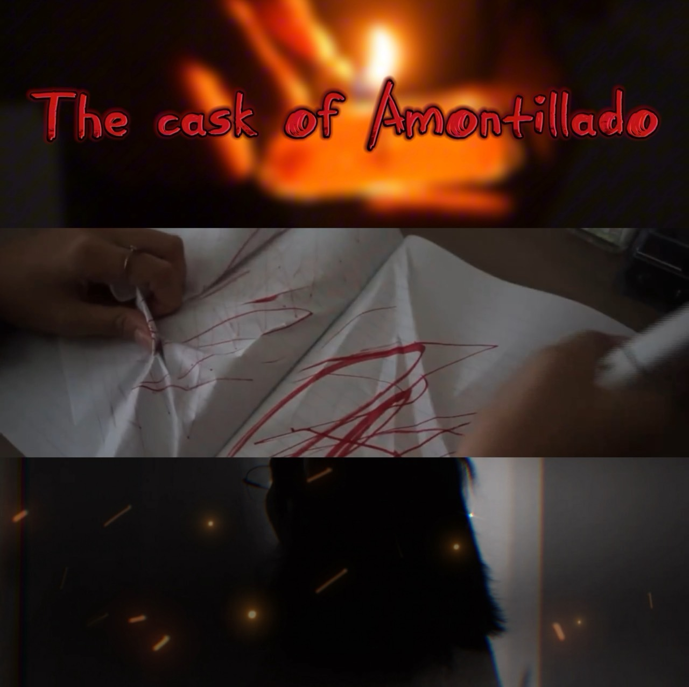

6THSaturn
This website was created to present the candidacy of Student Council President Candidate No. 6. It is the first website I developed and the project I am most proud of.
WebsiteEasyTrip
Transportation App Prototype - TobeIT'68 Hackathon
This app focuses on standardizing motorcycle taxi fare checks and enhancing user convenience. My role involved research and creating the pitching slides.
Received the Prototype Mastery Award.
Demo Skin Selector V.2
Project from the "Build Your Own AI" activity: A website that analyzes image samples by training a model using Teachable Machine.
GitHubIDSAFE
My hobbies include programming and trading game accounts. Through these activities, I noticed challenges in managing account data, which inspired the idea for creating this website.
YouTubeData Cleansing
Participated in the 2024 Data Science Project competition organized by Nim See Seng Transport 1998 Co., Ltd. The challenge was to perform data cleansing.
YouTubeSkin Selector V.1
This project utilized GPT to write code according to the planned workflow, aimed at reducing work time and increasing convenience by allowing users to select images and use an "OwO" button to merge the images together.
Source CodePhoto editing
This photo-editing project, which took over a year to develop, has gained popularity in the gaming market. GPT was utilized to create a system that arranges images below the workspace to streamline the editing process and reduce time.
See MoreVideo editing
Group project: Editing the trailer for the film The Cask of Amontillado using CapCut for video editing.
YouTubeVideo editing
Edited a short video reviewing a restaurant, using both Adobe Premiere Pro and CapCut for video editing.
YouTubeCertificate